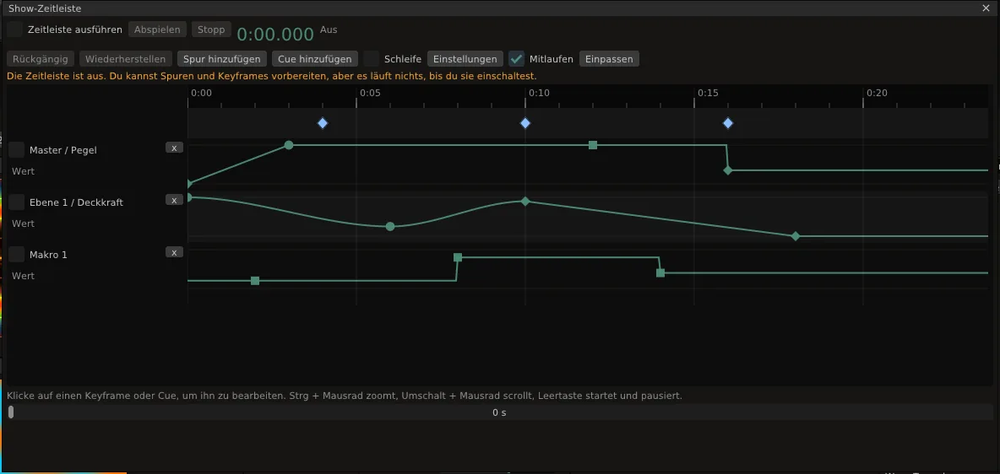

Inhalt
Erste Schritte
- Willkommen bei NyrexVJ
- Installation und erster Start
- Das Fenster im Überblick
- Deine erste Show in fünf Minuten
Visuals spielen
- Das Clip-Raster
- Decks und Übergänge
- Layer und Mischmodi
- Das Clip-Fenster
- Effekte
- Die Bibliothek
- Presets und Sitzungen
- Das Master-Fenster
Musik und Bewegung
Eigene Inhalte
- Video- und Bild-Clips
- Deine eigenen Shader
- 3D-Modelle
- Der Clip Creator
- Text, Partikel und Effektketten
- Der Node-Effekt-Editor
- Live-Quellen: Spout, NDI und Kameras
Ausgabe und Aufnahme
Live-Steuerung und Shows
- Steuerung: MIDI, OSC und die Webseite
- Show-Sync und Timecode
- Die Show-Zeitleiste
- Bühne: DMX, VRSL und VRChat
- Plugins
Nachschlagen und Hilfe
Handbuch / Live-Steuerung und Shows
Die Show-Zeitleiste
#Wofür sie da ist
Die Show-Zeitleiste ist ein optionales Fenster, das Regler und Schalter entlang einer Zeitachse automatisiert. Du blendest einen Layer oder den Master-Pegel über einen Song aus, ohne einen Regler anzufassen, oder du fährst eine vorbereitete Show gegen einen Timecode. Sie zeigt die Cue-Liste aus Einstellungen, Sync auf demselben Lineal. Sie ist standardmäßig aus.
#Einschalten
Das Menü Zeitleiste hat Zeitleiste ausführen, was die Zeitleiste einschaltet, und Fenster der Show-Zeitleiste anzeigen, was sie öffnet. Solange sie nicht an ist, wird nichts geschrieben und die Zeitleiste löst keine Cues aus, du kannst aber das Fenster öffnen und Spuren vorbereiten. Das Menü hat außerdem Abspielen oder Pause, Stopp und Handeingriffe freigeben.
#Spuren und Keyframes
Füge mit Spur hinzufügen eine Spur für einen beliebigen Regler oder Schalter hinzu. Doppelklick auf eine Spur setzt einen Keyframe, zieh ihn, um ihn in Zeit und Wert zu verschieben, und klick mit rechts darauf, um Halten, Linear oder Weich zu wählen. Ein quadratischer Griff ist ein Halten, ein Kreis ist weich und eine Raute ist linear. Umschalt beim Ziehen behält den Wert, und Strg behält die Zeit. Das Häkchen an einer Spur schaltet sie stumm, und das X entfernt sie.
Clips, Spalten und Decks sind Trigger und gehören auf die Cue-Spur, nicht auf eine Spur mit Kurve. Die Regler von Shader-Clips lassen sich noch nicht automatisieren.


#Position, Schleife und Handeingriffe
Die Position folgt einem Timecode, wenn es einen gibt, und läuft sonst mit den Knöpfen Abspielen, Pause und Stopp des Fensters. Klick oder zieh auf dem Lineal, um den Abspielkopf zu bewegen, und Umschalt und Ziehen auf dem Lineal markiert eine Schleife. Bewegst du einen gesteuerten Regler von Hand, lässt die Zeitleiste ihn los, bis zum nächsten Keyframe-Abschnitt oder bis du ihn freigibst. Handeingriffe freigeben gibt alle Regler an die Zeitleiste zurück.
Strg und das Mausrad zoomen um den Mauszeiger, Umschalt und das Rad scrollen. Einpassen zoomt so, dass jeder Keyframe und jeder Cue sichtbar ist. Rückgängig und Wiederherstellen gelten für die Zeitleiste, solange sie den Fokus hat.
#Speichern
Spuren werden in timeline.json im Datenordner gespeichert, getrennt von Presets und von cues.json. Einstellungen des Fensters, etwa was passiert, wenn der Timecode verloren geht, liegen in seinem Einstellungen-Popup. Einzelheiten, Grenzen und was nicht getestet wurde stehen in docs/TIMELINE.md des Projekts.
Fehler gefunden oder etwas vergessen? Sag es uns auf GitHub. Dasselbe Handbuch steckt im Programm, du hast es also auch ohne Internet. Öffne es mit F1 oder über das Menü Hilfe, Handbuch.